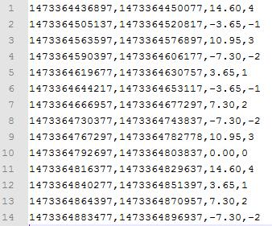
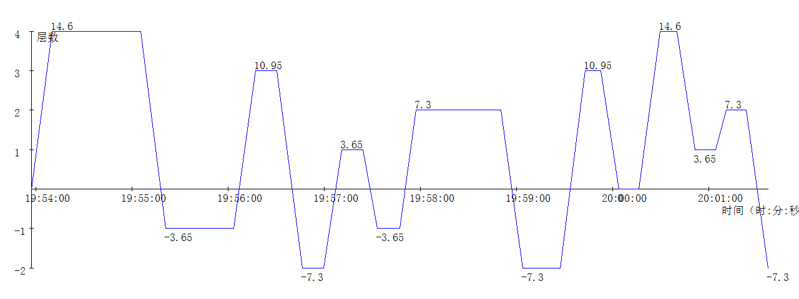

加速度计采集原始数据，WiFi无线传输数据，处理原始数据得到一个个电梯运动阶段，通过每个运动阶段的高度推算出层高和层数。这些都已经完成了，整个项目也进入尾声。最后需要做的工作就是可视化实验结果，也就是写一个程序，把《用加速度计估算电梯上升或下降高度（五）——由高度推算楼层数》中输出的实验结果画成一张折线图。
输入数据如图：

输出图像如下：

其实代码逻辑不算复杂，只是画图部分非常繁琐，要涉及到很多坐标变换的问题。自然语言解释不清楚，直接贴代码最干净利落~~~
using System;
using System.Collections.Generic;
using System.Linq;
using System.Text;
using System.Drawing;
using System.IO;
namespace DrawCanvas2
{
class Program
{
static void Main(string[] args)
{
//args = new String[] { @"R:\2.txt",@"R:\1.png","1200","400","60000","1"};
//======================参数处理=======================
if (args.Length < 6)
{
Console.WriteLine("usage: <inputFile> <outputFile> <width> <height> <xStep> <yStep>");
return;
}
string inputFile = args[0];
string outputFile = args[1];
int width = Int32.Parse(args[2]);
int height = Int32.Parse(args[3]);
int xStep = Int32.Parse(args[4]);
int yStep = Int32.Parse(args[5]);
//=====================画图部分========================
DrawCanvas canvas = new DrawCanvas(inputFile, outputFile);
canvas.setWidth(width);
canvas.setHeight(height);
canvas.setXStep(xStep);
canvas.setYStep(yStep);
canvas.setXLabel("时间（时:分:秒）");
canvas.setYLabel("层数");
canvas.draw();
}
}
class DrawCanvas
{
private const int DEFAULT_WIDTH = 640;
private const int DEFAULT_HEIGHT = 480;
private const int DEFAULT_LEFT_PADDING = 50;
private const int DEFAULT_RIGHT_PADDING = 50;
private const int DEFAULT_TOP_PADDING = 50;
private const int DEFAULT_BOTTOM_PADDING = 50;
private const int DEFAULT_XSTEP = 60000;
private const int DEFAULT_YSTEP = 1;
private const string DEFAULT_XLABEL = "X";
private const string DEFAULT_YLABEL = "Y";
private DateTime timeBase = DateTime.Parse("1970-1-1");
private string inputFile;
private string outputFile;
private int width = DEFAULT_WIDTH;
private int height = DEFAULT_HEIGHT;
private int leftPadding = DEFAULT_LEFT_PADDING;
private int rightPadding = DEFAULT_RIGHT_PADDING;
private int topPadding = DEFAULT_TOP_PADDING;
private int bottomPadding = DEFAULT_BOTTOM_PADDING;
private int xStep = DEFAULT_XSTEP;
private int yStep = DEFAULT_YSTEP;
private string xLabel = DEFAULT_XLABEL;
private string yLabel = DEFAULT_YLABEL;
private double xScale, minX;
private double yScale, maxY;
public DrawCanvas(string inputFile, string outputFile)
{
this.inputFile = inputFile;
this.outputFile = outputFile;
}
public void setWidth(int width)
{
this.width = width;
}
public void setHeight(int height)
{
this.height = height;
}
public void setLeftPadding(int padding)
{
this.leftPadding = padding;
}
public void setRightPadding(int padding)
{
this.rightPadding = padding;
}
public void setTopPadding(int padding)
{
this.topPadding = padding;
}
public void setBottomPadding(int padding)
{
this.bottomPadding = padding;
}
public void setXStep(int xStep)
{
this.xStep = xStep;
}
public void setYStep(int yStep)
{
this.yStep = yStep;
}
public void setXLabel(string xLabel)
{
this.xLabel = xLabel;
}
public void setYLabel(string yLabel)
{
this.yLabel = yLabel;
}
public void draw()
{
//从文件中读取4列
double[][] arrays = TextRead(inputFile, ',', new uint[] { 0, 1, 2, 3 });
double[] startTimes = arrays[0];
double[] endTimes = arrays[1];
double[] distances = arrays[2];
double[] floors = arrays[3];
//时间，也就是X轴
double[] dataTimes=new double[startTimes.Length*2];
//层数，也就是Y主轴
double[] dataFloors=new double[startTimes.Length*2];
//高度，也就是数据标注
double[] dataDistances = new double[startTimes.Length * 2];
//转换成画图需要的三个轴
dataTimes[0]=startTimes[0];
dataFloors[0]=0;
dataDistances[0] = 0;
for(int i=1;i<dataTimes.Length;i++)
{
if(i%2==1)
{
dataTimes[i] = endTimes[i/2];
dataFloors[i] = floors[i/2];
dataDistances[i] = distances[i / 2];
}
else
{
dataTimes[i] = startTimes[i/2];
dataFloors[i] = floors[i / 2 - 1];
dataDistances[i] = distances[i / 2 - 1];
}
}
Image image = drawChart(dataTimes, dataFloors, dataDistances);
image.Save(outputFile);
}
//把数据画到图像上，dataXs是横轴坐标，dataYs是纵轴坐标,dataY2s是数据标注
private Image drawChart(double[] dataXs, double[] dataYs, double[] dataY2s)
{
if (dataXs.Length != dataYs.Length)
throw new ArgumentException("dataXs.Length!=dataYs.Length");
//统计X和Y的最值
double maxX = Double.MinValue, minX = Double.MaxValue, maxY = Double.MinValue, minY = Double.MaxValue;
for (int i = 0; i < dataXs.Length; i++)
{
maxX = Math.Max(maxX, dataXs[i]);
minX = Math.Min(minX, dataXs[i]);
maxY = Math.Max(maxY, dataYs[i]);
minY = Math.Min(minY, dataYs[i]);
}
//计算x系数，pixelX= (x - minX) * scaleX + padding，封装成int transX(double)
this.xScale = (width - leftPadding - rightPadding) / (maxX - minX);
this.minX = minX;
//计算y系数，pixelY= (maxY - y) * scaleY + padding，封装成int transY(double)
this.yScale = (height - topPadding - bottomPadding) / (maxY - minY);
this.maxY = maxY;
//创建图像
Image image = new Bitmap(width, height);
Graphics graphics = Graphics.FromImage(image);
Pen pen = new Pen(Color.Black);
SolidBrush brush = new SolidBrush(Color.White);
//背景全白
graphics.FillRectangle(brush, 0, 0, width, height);
//绘制X轴，Y坐标为y=0的地方
int posX;
int posY = transY(0);
graphics.DrawLine(pen, new Point(leftPadding, posY), new Point(width - rightPadding, posY));
//绘制X轴上的刻度
brush.Color = Color.Black;
Font xFont=new Font("宋体",11);
for (long x = ((long)(minX / xStep)) * xStep; x <= maxX; x += xStep)
{
if (x == 0)
continue;
posX = transX(x);
if (posX < 0)
continue;
graphics.DrawLine(pen, posX, posY - 3, posX, posY + 3);
DateTime time = timeBase.AddMilliseconds(x);
graphics.DrawString(time.TimeOfDay.ToString(), xFont, brush, posX - 20, posY + 5);
}
//绘制X轴标注
graphics.DrawString(xLabel, xFont, brush, width-xLabel.Length*13-10, posY+25);
//绘制Y轴，X在x=minX的地方
posX = transX(minX);
graphics.DrawLine(pen, new Point(posX, topPadding), new Point(posX, height - bottomPadding));
Font yFont = new Font("宋体", 11);
//绘制Y轴上的刻度
for (long y = ((long)(minY / yStep)) * yStep; y <= maxY; y += yStep)
{
if (y == 0)
continue;
posY = transY(y);
graphics.DrawLine(pen, posX - 3, posY, posX + 3, posY);
graphics.DrawString(y.ToString(), yFont, brush, posX - 30, posY - 5);
}
//绘制Y轴标注
graphics.DrawString(yLabel, yFont, brush, posX+5, topPadding);
//绘制数据曲线
pen.Color = Color.Blue;
int lastX=0,lastY=0;
for (int i = 0; i < dataXs.Length; i++)
{
posX = transX(dataXs[i]);
posY = transY(dataYs[i]);
if (i>0)
graphics.DrawLine(pen, lastX, lastY, posX, posY);
//在数据上标注
if (i % 2 == 1)
{
if(dataYs[i-1]<dataYs[i])
graphics.DrawString(dataY2s[i].ToString(), yFont, brush, posX-5, posY - 18);
else
graphics.DrawString(dataY2s[i].ToString(), yFont, brush, posX-5, posY + 5);
}
lastX = posX;
lastY = posY;
}
return image;
}
//将逻辑x坐标转换成图像x坐标
private int transX(double x)
{
return (int)((x - minX) * xScale + leftPadding);
}
//将逻辑y坐标转换成图像y坐标
private int transY(double y)
{
return (int)((maxY - y) * yScale + topPadding);
}
//按行读取文本文件fileName，每行以splitor分割，取columns指定的列，返回各个列
private static double[][] TextRead(string fileName, char splitor, uint[] columns)
{
uint maxCol = 0;
for (int i = 0; i < columns.Length; i++)
maxCol = Math.Max(maxCol, columns[i]);
FileStream file = new FileStream(fileName, FileMode.Open);
StreamReader reader = new StreamReader(file);
List<double[]> list = new List<double[]>();
string line;
while ((line = reader.ReadLine()) != null)
{
string[] items = line.Split(splitor);
if (items.Length <= maxCol)
throw new ArgumentException("items.Length <= maxCol");
double[] datas = new double[columns.Length];
for (int i = 0; i < columns.Length; i++)
datas[i] = Double.Parse(items[columns[i]]);
list.Add(datas);
}
reader.Close();
double[][] result = new double[columns.Length][];
for (int i = 0; i < columns.Length; i++)
result[i] = new double[list.Count()];
int lineIndex = 0;
foreach (double[] datas in list)
{
for (int i = 0; i < columns.Length; i++)
{
result[i][lineIndex] = datas[i];
}
lineIndex++;
}
return result;
}
}
}